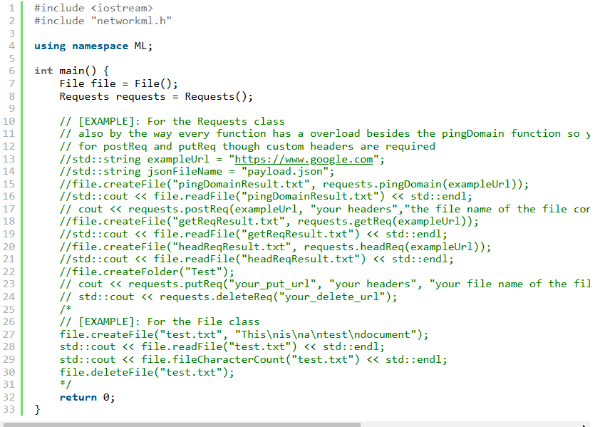
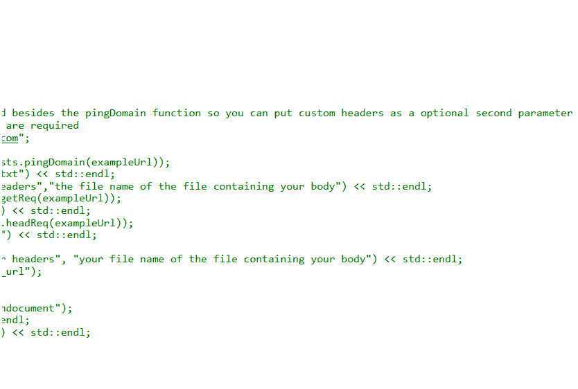

I coded a C++ library called Network ML. It makes some networking tasks & file management in C++ easy. First of all, first of all it has the ability to send any REST API requests and can files & folders. Please note it is currently only in v1.5 so further updates will be made.
This is some example code using the library:
Example code continued:
It includes the networkml.h header file to the program and instantiates the two main classes of the library; File & Requests.
For more information visit the GitHub and documentation.